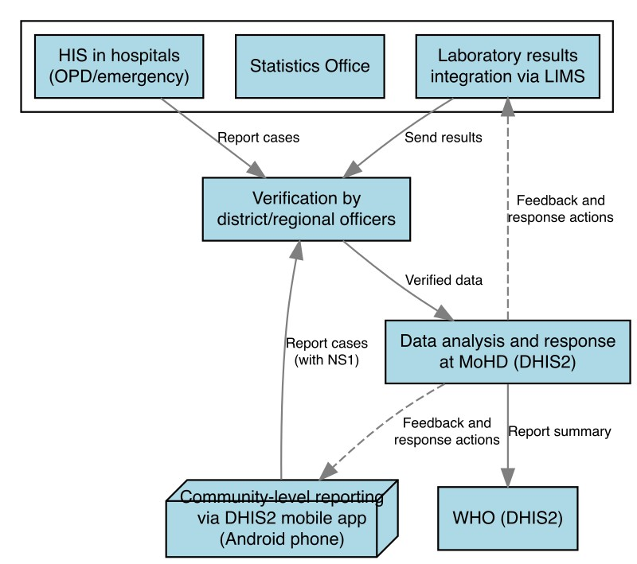

LabPush-SLN: A Stage I eIDSR Project for Dengue Fever Surveillance in Somaliland
1 Introduction
Dengue fever poses a significant public health challenge in Somaliland, with recent outbreaks highlighting the urgent need for improved surveillance and response mechanisms. The current paper-based Integrated Disease Surveillance and Response (IDSR) system has proven inadequate in providing timely and accurate data, hindering effective public health interventions. This project proposal introduces LabPush-SLN, a Stage I electronic IDSR (eIDSR) system designed to enhance dengue fever surveillance in Somaliland.
The eIDSR presents a significant opportunity to enhance the detection, reporting, and management of acute febrile illnesses, particularly dengue fever. This proposal outlines the implementation of eIDSR, focusing on the use of DHIS2 and the integration of advanced diagnostic tools.
2 Current Endemic Status of Dengue Fever
Recent epidemiological data from Somaliland demonstrates the severity of the dengue situation:
- October to December 2023: 2,635 reported cases, with 734 RDT-positive cases (27.9% positivity rate)
- September 2023 to January 2024: 6,394 suspected cases reported by WHO
- October 2022 to June 2024: Hargeisa Group Hospital (HGH) reported 2,871 cases (laboratory data unavailable)
The discrepancies in these figures underscore the critical need for a standardized, efficient surveillance system.
3 Current Status of IDSR
- DHIS2 and paper-based IDSR are currently implemented in MoHD
- dengue NS1 RDT, dengue ELISA (IgM/IgG) could be manually entered in LIMS (HGH laboratory)
- aggregated data daily print-out -> DHIS2 client in Statistics Office of HGH
- ICDF HIS print-out monthly -> DHIS2 client in Statistics Office of HGH
- Unvalidated dengue RDT test kits in use, leading to potential false negatives
- GeneReach Pockit PCR machines available: 4 in HGH, 1 each in Boroma, Burco, and Berbera general hospitals
4 Objectives of LabPush-SLN
- To establish a real-time, laboratory-based surveillance system for dengue fever in Somaliland.
- To improve the accuracy and timeliness of dengue case reporting.
- To enhance the capacity for early outbreak detection and response.
- To optimize the utilization of Rapid Diagnostic Tests (RDTs) through systematic tracking and quality control.
5 Methodology
5.1 System Design
LabPush-SLN will leverage the open-source DHIS2 platform, customized for dengue fever surveillance in Somaliland. The system will focus on:
- Integration with existing Hospital Laboratory Information Management Systems (LIMS) where possible.
- Real-time data entry of laboratory-confirmed dengue cases.
- Automated data validation and error-checking mechanisms.
- User-friendly interfaces for laboratory technicians and public health officials.
5.2 eIDSR Framework Implementation
- DHIS2 Integration:
- Deploy DHIS2 mobile app for automatic reporting from community level
- DHIS2 customization and integration with LIMS (Laboratory Information Management System) at HGH laboratory.
- ICDF HIS using established case definitions in HGH, Boroma, Burco, and Berbera general hospitals
- Enhanced Dengue Diagnosis:
- Implement quality control measures for RDTs:
- 10% sampling of RDT negative cases for PCR confirmation
- Utilize GeneReach Pockit PCR machines for dengue virus RNA detection
- Implement quality control measures for RDTs:
- Reporting Workflow:
- Community-level reporting via DHIS2 mobile app in android smart phone
- Laboratory Testing in hospitals: Dengue RDT and ELISA (IgM/IgG) tests performed at the hospital laboratory.
Data Entry: Data clerk enters test results into the existing LIMS.
Data Push and Alerts:
- Daily push from LIMS to DHIS2 in the Statistics Office of HGH, then to DHIS2 at MoHD.
- SMS alerts sent to referral physicians for immediate patient care.
- Aggregated data pushed monthly from LIMS to DHIS2 in the Statistics Office of HGH, then to DHIS2 at MoHD.
- Verification by district/regional officers
- Case Management: The Infection Prevention Center (IPC) at HGH will oversee case management.
- Data analysis and response at MoHD level

5.3 Implementation Steps
- Technical Setup:
- Configure DHIS2 for dengue fever surveillance
- Integrate LIMS with existing hospital systems
- Ensure interoperability between DHIS2, LIMS, and ICDF HIS
- Training:
- Conduct training sessions for community health workers on DHIS2 mobile app
- Train laboratory staff on LIMS and quality control procedures
- Educate district officers on data verification processes
- Quality Assurance:
- Establish protocols for PCR confirmation of RDT negative cases
- Implement regular system audits and data quality assessments
5.4 Phases
Phase 1 (Months 1-3): System development and testing at HGH laboratory.
Phase 2 (Months 4-6): Pilot implementation and user training at HGH.
Phase 3 (Months 7-12): Expansion to three additional public hospitals (Boroma, Berbera, and Burco).
6 Capacity Building
The project will include targeted training programs for:
- Laboratory staff on system usage and data entry protocols.
- IPC staff on case management and response coordination.
- IT personnel on system maintenance and troubleshooting.
- Public health officials on data interpretation and outbreak response.
7 Expected Results
- Establishment of a functional eIDSR system for dengue surveillance at four major public hospitals in Somaliland.
- Reduction in data reporting time from monthly to daily updates.
- Improvement in data accuracy, with error rates reduced to less than 5%.
- Enhanced capacity for early outbreak detection, with the ability to identify clusters within 24-48 hours of case confirmation.
- Optimized utilization of RDTs, with usage rates increased to over 90% and false-negative rates reduced to below 5%.
- Improved coordination between laboratory services, clinical care, and public health response through the integrated information flow.
- Improved patient outcomes through more accurate and timely diagnoses
8 Monitoring and Evaluation
The project will be evaluated using the following key performance indicators (KPIs):
- Set up dashboards for real-time monitoring of dengue fever cases (target: 99% uptime)
- Data reporting timeliness (target: 90% of cases reported within 24 hours)
- Data accuracy (target: 95% accuracy rate)
- User satisfaction (target: 80% satisfaction rate among system users)
- Outbreak detection time (target: 100% of outbreaks detected within 48 hours of first case confirmation)
9 Budget Plan
The proposed budget for the 6-month LabPush-SLN project is as follows:
| Category | Amount (USD) | Description |
|---|---|---|
| NS1 RDT Kits | 12,500 | 5,000 tests (200 kits @ 25 tests per kit, $2.5 per test) |
| DHIS2 Customization | 3,000 | Configuration and integration with existing LIMS |
| Training and Capacity Building | 2,500 | Training programs for laboratory staff, IPC staff, and public health officials |
| Monitoring and Evaluation | 1,500 | Data analysis and report generation |
| Contingency (2.5%) | 500 | For unforeseen expenses |
| Total | 20,000 |
10 Conclusion
The LabPush-SLN project, leveraging the open-source DHIS2 platform and integrating with existing LIMS, represents a cost-effective approach to modernizing dengue fever surveillance in Somaliland. By implementing this Stage I eIDSR system, we anticipate significant improvements in the timeliness, accuracy, and utility of dengue surveillance data, as well as enhanced coordination between laboratory services, clinical care, and public health response. This improved capacity will enable more effective public health interventions, ultimately contributing to reduced morbidity and mortality from dengue fever in Somaliland.
11 Meeting Minutes [2024/08/01]
- Finalize technical specifications for system integration:
stage I: LabPush-SLN 1) [tracking] all suspected and confirmed (NS1) dengue fever cases will be reported to DHIS2 in daily basis, for initial disease surveillance. then, 2) [diagnosis] TMM will try to support NS1 RDTs to HGH lab as Dr. Hergeye’s request under emergency endemic situation. all donated RDTs must be tracked under this surveillance system, LabPush-SLN.
stage II: DHIS2 Android Capture App for communities
- Develop a detailed implementation timeline
- Secure necessary resources and partnerships for full-scale rollout
- Conduct a stakeholder meeting to present and refine the concept
This concept note provides a framework for discussion and further development of the eIDSR system in Somaliland, with a focus on enhancing dengue fever surveillance through improved technology integration and quality control in diagnosis.
National HMIS Somaliland Somaliland Health Data Warehouse https://somalilandhis.net/dhis-web-commons/security/login.action
(eIDSR) Abdilahi + Tex: statistics office in HGH, Sunday, Aug 4 · 09:00–10:30
LabPush-SLN: LIMS (NS1, PCR) + HIS → regional officer (Abdirahman) → DHIS2 MoHD for 47 notifiable conditions (dengue fever, immediately)
(Tex think: there is no good dengue surveillance in IDSR, weak point, how insecticide spray could do on proper target since October 2023 by UNICEF) IRS: December 2023, IDSR section of MoHD is working with Ministry of Agriculture to do vector control, under limited information (supported by UNICEF)
12 The (draft) formal letter to TMM highlights the current challenges with the dengue fever surveillance system and makes a strong case for implementing eIDSR.
[Ministry of Health and Development Letterhead]
[Date]
Dr. Jamal Tex LH Chi Taiwan Medical Mission in the Republic of Somaliland
Dear Dr. Tex,
Subject: Request for Support in Implementing Electronic Integrated Disease Surveillance and Response (eIDSR) for Dengue Fever Control
I hope this letter finds you well. On behalf of the Ministry of Health and Development (MoHD) of Somaliland, I am writing to formally request support from Taiwan Medical Mission (TMM) in implementing an Electronic Integrated Disease Surveillance and Response (eIDSR) system, with a specific focus on enhancing our dengue fever surveillance and control efforts.
The current dengue fever situation in Somaliland is of significant concern, and our existing surveillance system faces several challenges that hinder our ability to respond effectively. Allow me to present some key evidence that underscores the urgent need for an improved surveillance system:
- Data Fragmentation and Inconsistency:
- From October to December 2023, 2,635 cases of dengue fever were reported, with 734 testing positive (27.9%) using rapid diagnostic tests (RDTs).
- However, another report indicates 6,394 suspected dengue fever cases from September 2023 to January 2024, with a peak in November 2023.
- Hargeisa Group Hospital (HGH) alone registered 2,871 dengue fever patients from October 2022 to June 2024, but the laboratory results for these cases are unknown.
These discrepancies highlight the fragmentation of our current paper-based IDSR system and the urgent need for a unified, electronic system.
- Inadequate RDT Distribution and Utilization Tracking:
- In December 2023, 20,000 RDTs were received, but records of their distribution and usage are incomplete.
- HGH laboratory received only 1,512 dengue NS1 RDTs (December 2023 to June 27, 2024), with a positivity rate of 25.9%.
- The distribution of the remaining 18,488 RDTs is unclear, indicating a lack of proper tracking and inventory management.
- Incomplete Demographic Data:
- The demographic data of those tested with RDTs is incomplete, hindering our ability to understand the population most affected by dengue fever.
- Lack of Coordination in Vector Control:
- The responsibility for Indoor Residual Spraying (IRS) for mosquito control has been delegated to the Ministry of Agriculture, leading to a disconnect between case detection and vector control efforts.
Given these challenges, we believe that implementing an eIDSR system would significantly enhance our ability to track, respond to, and control dengue fever outbreaks. The eIDSR system would address the following key areas:
- Real-time data collection and reporting
- Improved data accuracy and consistency
- Enhanced ability to identify outbreak hotspots
- Better coordination between case detection and response activities
- Improved inventory management of diagnostic tools (RDTs)
Additionally, we support the recommendation to focus on improving the quality control of RDTs, aiming to reduce the false negative rate to below 5%.
We kindly request TMM’s support in the following areas:
- Technical expertise in setting up and implementing the eIDSR system
- Training for our staff in using the eIDSR system effectively
- Support in establishing a quality control mechanism for RDTs
- Guidance on integrating the eIDSR system with our existing health information systems (i.e., District Health Information Software 2, DHIS2)
To facilitate this process, we have prepared a detailed outline for requesting comprehensive dengue fever data from our DHIS2 system by Mr. Abdilahi, which will serve as a crucial foundation for the eIDSR implementation and help TMM better understand the current gaps in our surveillance system.
We believe that this project aligns well with TMM’s expertise and Somaliland’s public health priorities. By focusing on strengthening our surveillance system rather than IRS, we can more effectively allocate resources to combat dengue fever.
We look forward to collaborating with TMM on this crucial initiative. Please let us know if you require any additional information or clarification.
Thank you for your continued support and partnership in improving public health in Somaliland.
Sincerely,
Mr. Mahdi Dahir Bahdon
Director of Public Health Department (MoHD)
Republic of Somaliland, Hargeisa
Somaliland
13 DHIS2 Somaliland, data schema in dengue fever surveillance
The outline for the data request is comprehensive and should help you gather the necessary information from DHIS2.
13.1 Outline: Request for Dengue Fever Data (2023-2024) from DHIS2
- Introduction
- Purpose of the request: for capacity building of dengue fever surveillance system
- Timeframe: 2023-2024
- Specific Data Points Requested
- Total number of suspected dengue fever cases
- Number of confirmed dengue fever cases (by dengue NS1 RDT, or dengue RNA PCR)
- Demographic information of cases (if available)
- Age groups (1-5, 6-18, 18-60, 60+)
- Gender
- Geographical distribution of cases
- By region
- By district
- Data schema in dengue fever surveillance
- which data could be collected by DHIS2
- data elements in represented in the database (postsql)
- Temporal distribution of cases
- weekly and Monthly breakdown
- Identification of peak periods
- Additional Information
- brands of RDTs used
- Number of RDTs distributed and used
- Positivity rates of dengue NS1 RDTs
- Data Format
- Request for data in electronic format (e.g., csv or Excel spreadsheet)
- Data Use and Confidentiality
- Assurance of data confidentiality
- Intended use of data for eIDSR project planning and evaluation
- Timeline
- 10 August 2024 for data delivery
- Contact Information
- Dr. Jamal Tex LH Chi, Taiwan Medical Mission